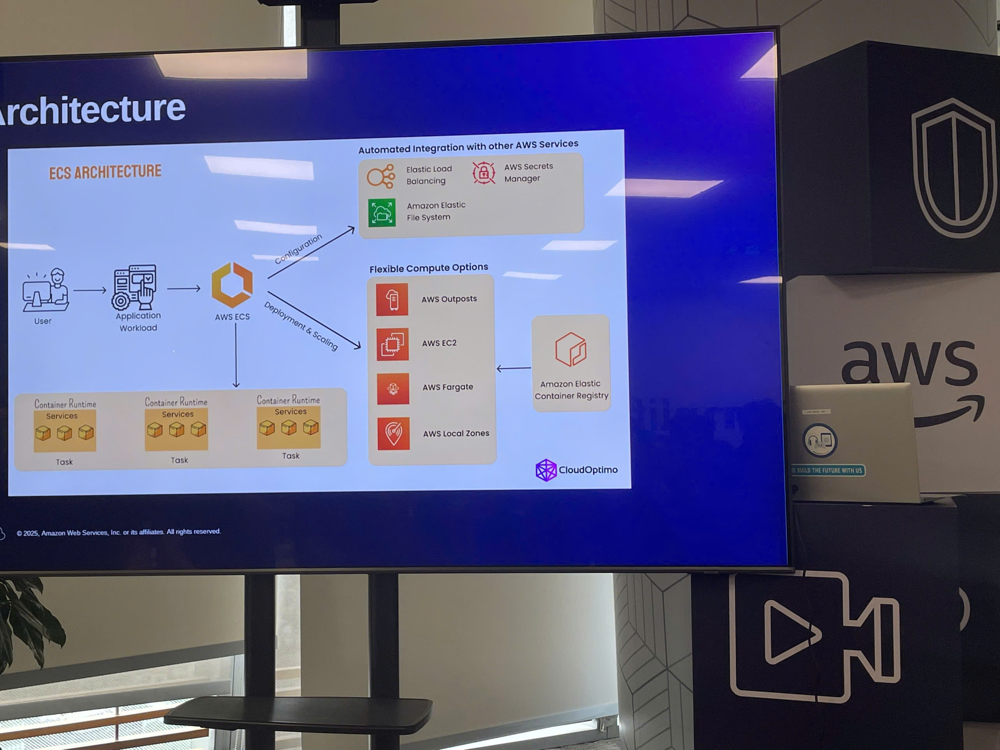
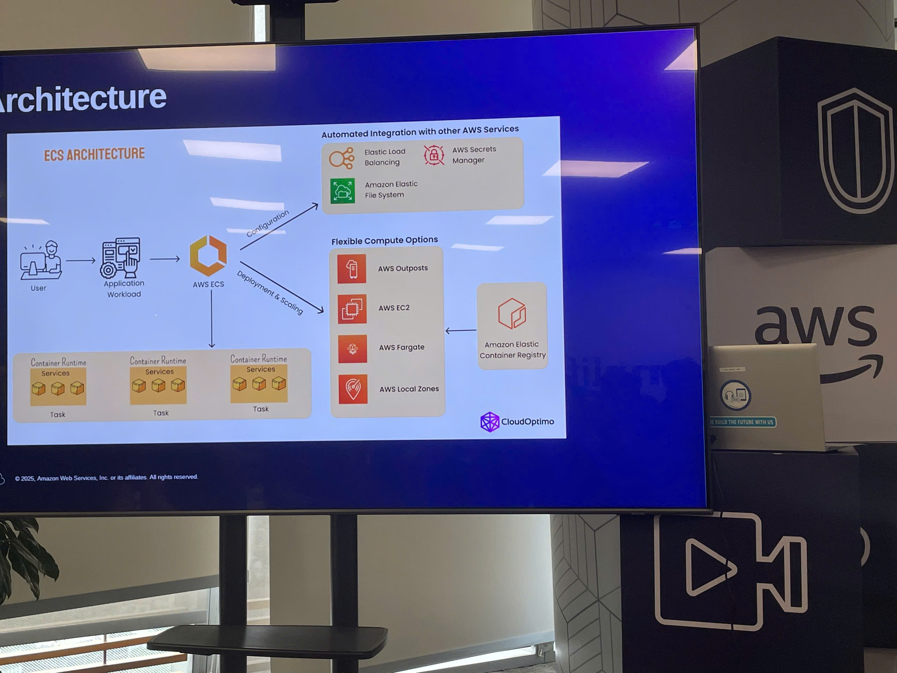

Event 3
Summary Report: “AWS Cloud Mastery Series #2: DevOps on AWS”
Event Objectives
- Understand what the “DevOps Mindset” actually is.
- Get to know AWS services for DevOps and CI/CD pipelines.
- Learn about “Infrastructure as Code” (IaC) - controlling things with code.
- Explore Container services on AWS.
- How to check if the system is healthy (Monitoring & Observability).
- Hear real-world tips and “battle stories” from the experts.
Speakers
- Truong Quang Tinh
- Nghiem Le
- Long Huynh
- Quy Pham
Key Highlights
DevOps Mindset
- Collaboration is key: Devs and Ops need to work together and share responsibility, not blame each other.
- Automate everything: If you have to do it twice, write a script. Don’t do it by hand.
- Keep learning: Tech changes fast, so we have to keep learning and trying new things.
- Measurement: You need data/numbers to know if you are doing well or not.
The DevOps Journey (For beginners)
-
Do:
- Start with the basics (Linux, Network…).
- Learn by doing: Build real projects yourself.
- Document everything you do.
- Master one thing at a time, don’t rush.
- Improve soft skills (communication).
-
Don’t:
- Stay in “tutorial hell” (watching videos without coding).
- Blindly copy-paste code without understanding how it runs.
- Compare your progress to others.
- Give up when you hit a bug.
CI/CD Pipeline
- Understanding the app lifecycle: From coding, testing, reviewing, staging (pre-prod), all the way to real users (production).
Infrastructure as Code (IaC)
- The concept: Use code to manage cloud resources instead of clicking around in the console manually.
- Automation: Automatically create, update, and delete infrastructure to avoid mistakes.
- Tools: Terraform, OpenTofu, Pulumi.
Container Services on AWS
- Managing containers with Docker, Kubernetes, Amazon ECR, and Amazon EKS.
- Amazon App Runner: A really cool service to deploy web apps directly from code without worrying about servers or complex configs (great for newbies).
Monitoring & Observability
- Using best practices with Amazon CloudWatch and Amazon X-Ray to see if the system is running smoothly.
Key Takeaways
DevOps metrics that matter
- Tracking deployment health.
- Making the system more flexible and stable.
- Ensuring the best user experience.
- Proving that the tech we use is worth the investment.
The “Continuous” in CI/CD
- Seeing the full picture of how a CI/CD pipeline flows from start to finish.
IaC in AWS
- Knowing how to use Amazon CloudFormation to create templates for infrastructure, so we don’t have to build it manually every time.
Applying to Work
- Build a roadmap: Plan my own career path in DevOps.
- Try CI/CD: Attempt to add an automated pipeline to my current project (stop manual deployments).
- Make Templates: Write infrastructure code templates to reuse later and reduce human errors.
Event Experience
Attending the “DevOps on AWS” workshop was really eye-opening, almost like having a guide for my DevOps career path. Some memorable experiences included:
Learning from the Speakers
- Experts from FACJ shared very honest stories about their daily DevOps work.
- Got to see a live demo of system monitoring, which looked really professional.
Exploring CI/CD and IaC
- Understood how big companies update their software continuously using CI/CD pipelines.
- Learned how to write code to build infrastructure (using CloudFormation/CDK) instead of tweaking things by hand.
System Monitoring
- Learned more about setting up alerts and viewing dashboards, as well as the on-call process for handling incidents.
Some event photos
 


Overall, this event gave me a full picture of the DevOps career. More importantly, I picked up some “best practices” on how to apply CI/CD and monitoring properly.